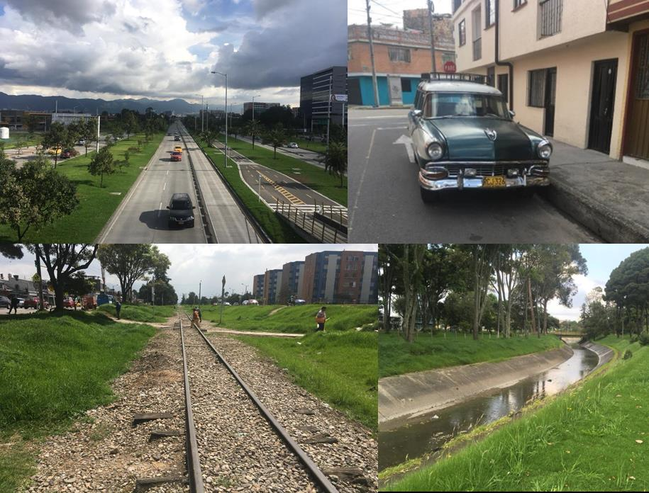
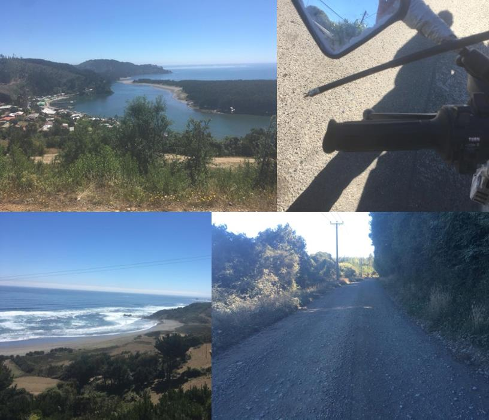

November 30th 2017
The adventure starts, dropping the bike off at Moto freight, in readiness for my South American adventure the turn of the year, shame about the lose of tooth, broke off today, have to get used to the toothless smile posts, whilst away, not a quick fix.
January 4th 2018
The adventure starts!
January 5th
Well they let me in, all went pretty smooth. This is home till Tuesday, looks like a jail with the security gating but they all have them, maybe after dark it all kicks off, The Colombians I’ve come across so far are so friendly and helpful more than I can say about the Spanish Europeans Unfortunately the customers have a bank holiday planned this weekend so unable to release the bike.Just means I will have to explore the hidden secrets of Bogotá’s, and plan my route, more in favour of heading towards Medellin on the Pacific coast, seam a good safe route through the coffee plantations.
January 7th
Morning, not much to get excited about, I am not a lover of city’s, stuck here till Tuesday as customs have a bank holiday Monday. Been nosing about on foot, is a bit scruffy round the back streets, but friendly honest and inviting people so far. The money takes a little to get used to, you kind of offer up a hand full of notes, and they sort through them. Looking forward to heading into the mountains from the view I’ve taken.
January 8th
Hopefully my last day in the streets of Bogota, been interesting never listen to all the badness that’s put out about Colombia, the people are more inviting than Londoners. I am so ready to mount my bike and get into the hills. I would have taken more pictures but didn’t want to look more like a tourist than I was all ready. The confidence is starting to build now, it’s hard when you have to get your head around the money thing, and it’s not like Spain no one talks English here. The speak and translate app is a must to get by. So hopefully I am going to be reignites with my bike tomorrow.
January 10th
This is it am finally away. Took all day for my little fixer to sort the paperwork, never seen so many forms to release the bike, put the bags luggage and mirrors on, fill up with fuel, then I was sput out in to the rush hour traffic, what an experience, not for the faint hearted. Heading for the hills tomorrow
January 11th
First days riding, took me a while to break out of Bogota, the one ways system is crazy. As soon as I hit the hills wow. You are not going to go anywhere quick on these roads, amazing views everywhere, you just climb up down and around mountains all day, at one point I reached an altitude of 3000 metres don’t think there is a paved road in the alps that high. The pictures don’t do it justice, would of taken more, but I just didn’t want to stop to take them, even took a bit of a detour into the jungle, was a dirt track went on for miles. Started to get at bit concerned thought I was going to come across a coco leaf plantation, that was it after that found a cheap hotel camping out would have been a bit to much. Adios.
January 12th
Have you ever been under a tin roof when it rains, well that was my room for the night with a massive thunder storm chucked in. Tried to plan my route though goggle maps with the intention of taking this little road across country but it would not let me, that made me more determined. What a route it took me through the jungle hugging the mountain like a roller coaster, some of it quite challenging no black stuff in sight, 6 o’clock had to give in pulled in to an oasis of a hotel next to the river shot. Think the only way to see this country properly is motorcycle, these areas are so in excess able.
January 13th
After the epic ride thought the jungle the previous day, it hammered down that night all night, some of the road were just about passable. Had problem starting the old girl in the morning, may have been me leaving the fuel tap on, done that before. Any way the man from the hotel sore me having trouble, before I knew it I had this lot in the photo working on her, in the end she started as I stayed may have been me leaving the fuel on. You are never along in the world with people like this. Love Colombia. The road had been pretty damaged by the rain so was hard work for most of the day, eventually the black stuff come and was a pleasant ride into Medellin. Sorry for those folk that are expecting top camera work but the video I put on yes is at 90% but was trying to give you a bit of what I see and ride a bike, Think you get the idea.
January 15th
Been a couple of normal days once I left the real jungle roads. Medellin was just another city was kind of glad to got out the next day, it lays in a kind of dish at the bottom of the mountains, the smog from the traffic is really bad was glad to get, + I was suffering a bit with the south America trots. Ridings been on the black stuff last two days kind of glad, what with a dodge belly. The landscapes leveled out now still running at 2000 meters. Be sad to leave Colombia just outside Cali now, still a couple of days before I reach the Ecuador border.
January 16th
Good days riding bit of everything, Cali to just outside pasta which is south of Colombia not far from the Ecuador’s boarder, a lot of open areas now, still riding about 1600 meters bit more rolling, in some ways like England lush green, rain at times, and bad roads. One thing you have to get used to is a lorry or car on your side of the road coming right at you, they just overtake any ware anytime, it’s just excepted, see some real close misses, it seems to work for them. At the end of the day came across this bunch of cycles invited me for a bit to eat the other side of the bridge we were on couldn’t refuse, one of them spoke good English, they were cycling to Peru, nice bunch, trouble is by stopping meant I had to ride the last hour in the dark hard work.
January 18th
I have now crossed over the boarder into Ecuador, was a long process, start to finish about 5 hours of queuing, so was well dark when I entered Ecuador. Kind of disappointed a bit the next day, then would have to go some to match Colombia’s stunning views. The landscape is very open with mountains in the distance, generally riding at 2000 meters once go to 3200m. A new duel lane road has taken me pretty much 100 or so miles into Ecuador, must be America money that payed for it, as they went skint back in the 90s and have adopted the dollar now. Was a break for a change smooth tarmac. Crossed over the equator, was expecting more, maybe I built up to much. The rain always seems to come at the end of the day.
January 19th
Spotted this means of transport, can guarantee it’s a real horse and perfectly happy, before you ask, gave me a nod haha. Had to take the pic on the move about 55ish . Apart from that little chuckle, not a great day. Trying to source a new camping cooker my wonderfully expensive Petrol stove broke just when you need it most, anyway found this supplier on route. Been in the clouds most of the day fog rain I’ve had the lot, topped out at one point 3800metres, through I would have problems with the bike that height, she’s running great. Can’t all be sunny days can they.
January 20th
Traveling The remaining part of Ecuador 🇪🇨 before the boarder into Peru, has been pleasing, the land scapes pretty barren but open, good views. Wish I had more time for Ecuador but need it for Peru and Bolivia of which I would like to spend more time in. The shade fella in the picture is a yank, I can’t quite make him out spent the evening chatting with him, meant to be a doctor of alternate medicine, spends a lot of time in Ecuador healing folk mainly stress, would need 5 pages to cover what we talked about, nice fella tho, says he is all over the internet, under doc Martin. I am about 5 k from the board so let’s hope it doesn’t take as long as getting in to Ecuador.

January 21st
I have just awakened at my Pacific beach retreat. The day start off with the usual frustrating board crossing queuing, luck for me I met up with these two, father and son duo from Brazil, the son only 19 spoke good English was kind of on a training holiday not long passed his bike test his father though it a good idea to gain experience great idea.Father had navigation my intended route many year ago, so 4 hour, didn’t seem it, and I picked up so much advice and insight for my intended route of South America. Once into peru we chose our separate ways as they had a deadline to meet and I, just headed to the Pacific. Picked up supplies headed for the beach and had a couple of chilled hours with a ready meal dinner, it’s my first contact with the Pacific so warm. With al good inventing set out to find a cheap hotel for the night, came across this little spot at the end of a gentleman’s land allotment, thought it wise to ask his permit ion, went off for supplies of beer and water, that was my 5* hotel sorted for the night. Wow.
January 22nd
The coastal route I was so looking forward to kind of petered out after I left my beach retreat. Still hugging the coast line, but very very open and flat for miles, was quite alone at times, and you needed good concentration on the sand gravel roads, took me through a lot of the villages. The big towns were so dirty lots of rubbish everywhere, interesting ride but hard work. Decided, to head back inland into the mountains a city called kuelap highly recommended for its views into the rain forest.
January 23rd
Internet coverage hasn’t been great in the mountains. It’s taken me a couple of day to get to kuelap in the rain forest, the trips along has been rewarding. You know when your doing something, and you don’t want to stop for anything but have to in the end, that was yesterday evening for me I just didn’t want to stop riding, the road was flowing the view was great, even taken my mine off my sore ass, then darkness came and spoilt it. The lad in the picture wanted a pic on the bike, so we did a swap, I do like there trucks. Today’s been much the same amazing views to distract my attention off the road.
January 26th
Been up in the heavens for the last 2 day, haven’t dropped below 3000m and at one point was 4000m. Pictures taken with a phone never give a good likeness. The moodiness of the weather at this altitude, how quick it changes, and the shear drops to the side of the single track. All of the high altitude tracks are just that dirt gravel tracks. Can be very hard to find, using combination of goggle maps and a garmin Montana sat nav. Heading for the coast tomorrow. Some nice rolling tarmac. Hope to reach Lima in a couple of day.
January 27th
Been a long shift today in the saddle for 12+ hours, wanted to get to the coast, give me an easy run into Lima tomorrow. Was hoping for a tarmac run, but ended up doing 40% dirt roads, don’t know how the bikes going to hold up, with all this punishment it’s getting 🤞 🤞 🤞 🤞. The picture of the road in the distance, there was a mirror of that on the side I was coming down and then I had to tackle that one in some places the drop was shear, not a barrier in sight. Amazing how they build these roads they’ve been there for many years as there are towns and houses balanced all along the route. Topped out at 4300m today bikes good, gives me a stonking headache.
January 28th
Not much you can say about the 400k ride to Lima, was relaxing after all the mountain excitement. Was a newish duel lanes road, running close at times to the cost, but most of the time you felt like you were crossing the desert, with the sand blowing across the road. Was so tempted to venture off into the cushions of sand on one of many tracks I pasted, to spic up the trip,it got the better of me in the end came close to the coast so took a little track to a bay and had a break.
January 29th
Kind of mixed day. Started out in Lima, don’t know y I have to travel through big city’s, apart from the challenge of weaving through the traffic, it kind of excites me, the end result is just another city. The inner core of Lima is very clean and modern, but you don’t have to travel far outside that inner core and the realistic dirty rubbish every ware side materializes. Was hoping to see the famous rollers and surfers along the coast line, but was a flat sea, that was my q made a retreat. Traveled along the coast ending up at this ex hostel, the planes you can see in the pics were in the kiddy’s play area they loved it, would never happen in England. This is the best bit, the fella in the pic. Just nocked on my room door sore the English bike plate. English fella been traveling round s/America for a couple of years by car. without going on about it to much, took me out brought me dinner lots of bear and shared his knowledge of s/America and his travels with me, turns out he had a result with stocks and shares in the 90s so been able to follow his travel passion for many years. Dave was a very nice and genuine guy.
January 30th
Been a couple of hard riding days. Took the tourist route out to Cusco, which is the main town the tours and train goes from out to Machu peccu. Once back in the mountains the road was a work of art, hugging the mountain, and good tarmac to, kind of wish I had a modern bike for these two days. My over night stop was at nearly 4000m. The room was pretty basic, must have had 4 blankets on the bed, if the altitude wasn’t going kill me the weight of that lot was, once the sun went you needed that lot it was so cold ,there was me think about camping out. Then next day was pretty much the same a fantastic road, bit of rain in the afternoon as you can see. Am now in Cusco, managed to book a train ride up the machu peccu tomorrow, so day off tomorrow hope it’s worth it cost enough.
January 31st
No bike stuff today. Was a hard day off, up at 6, felt like work, 2 hour bus ride to station then another 2 hour train ride, then a 30min bus ride up to Machu Picchu. Was it worth it, definitely an amazing peace of history dating back to the 1400 century, glad I went. Would I had gone if it wasn’t on my route, probably not. Was wandering what the coco plant looked like, now we know. Back to the road tomorrow heading towards BolÃvar looking forward to. via lake Titicaca, probably a couple of days through the mountain before I reach BolÃvar.
February 2nd
Not an amazingly interesting day, then after yesterday can live with an ordinary day.The landscape leveled off between 3 & 4000m apart from distant mountain peeks the roads were pretty strait, good thing made good time, reached lake titicaca, stop for the night, gives me 70mile in the morning to the boarder of BolÃvar. Those lads in the picture pounced on me when I stopped for some supplies, they had, had a skin full, there was about 5 of them at one point, wanted me to join them, was tempted, but though the better who knows ware I would have ended up. Brighten up the remainder of my journey. Once into BolÃvar i am reliant on WiFi, as very expensive.
February 5th
Coming from Peru, you can’t tell the differences, apart from the crazy customs process. First night I spent in la plaz there highest city, once away BolÃvar starts to open out. Consistently running at 3500 to 4000m altitude, very open, and strait roads. When you enter most towns it’s very hard to find the main road out, specialty as I have no phone or sat nat coverages in Bolivia only map. Anyway I took the wrong road out of the two, realizing eventually, decided to take this sort cut, all sort cuts are dirt, i was doing good until I came to this salt lake with a coverage of water in places. Coming across was , two lorries, spoke to the driver he confirmed was ok take it easy. My adventurous side got the better of common sense, off I went was going well as per the video, keeping within the makers. What seemed like a stones throw was looking more like 2k and the water was getting deeper, kept paddle on, started getting a bit concerned, no more markers was hard to follow the tyre marks, and to top that a storm with lightning was coming my way, must have been 50 metres from the shore, when the back tyre found a soft spot, she was going no ware, now I really did think l had pushed my luck this time with about as hour of daylight left, was about to abandon her walk to the shore and make camp. You really are along in these places, anyway I gave it one last effort, dragging the bike on its side out of the hole, and amazingly once stood up she fired up, put all the gear on, and flat out back to dry land. That was a scary one, staying to the roads or gravel now. The picture of the lads, was there hotel I turned up at in the dark soaking wet, helped me sort the bike the next day, brilliant people. That was a very close one.
February 6th
Normal day. Reached Uyuni by 12 found a hotel. Then shot out to the salt flats, bit disappointed, so much rain was no area with out water covering, so was unable to get on and have a play, was still amazing to Spend time there watching all the tour four wheel drives ferrying groups around it. A Russian couple been on the road for four years, pulled up on this 150cc jap cheapy they brought in Peru, they planned to camp on the lake for the night, wish I had thought of that. Went back to the town bit of a back packers haven, had a good meal and a couple of bears, was a mellow day. Going to head on over to the Chile boarder tomorrow.

February 7th
The road I travel from Uyuni salt flats Bolivia, to the border of Chile, was a stunning dirt track for well over a 100 miles filled with all sorts of challenges, came to a salt works, the road at this point was totally underwater, maybe I would have got through but would been soaked through me and the bike up to the saddle, used common this time, well, don’t think the other way was using common, sore the railway about a stones through away, diesel not Electic , train had just left, so being the only dry passage run down the middle till the crossing, only think had to hold my breath over the bridge sections, in the pic, the lightning is something to dodge to, I could be a good moving target. Crossed the boarder into Chile, no probs, was a bit late, trouble being had to do 100miiles to nearest town for accommodation, stunning scenery, think they call it valley of the moons, last hour was in the dark and fuel was becoming a concern. All turned out good. Next day not. Very advent full, down to the coast town of Antofagasta, very impressive, feels and looks like a European coastal result. Had to pull over and have words with the lads with the lorry was very impressive, having driven one myself year ago. Not this size tho.
February 8th
I was in two minds a couple of days ago weather to run along this coast line or head on back over the mountains,wow. What sett me up for this amazing coastal road was the town of Antofagasta, just has a good feel about it, would love to come back for a holiday there if it wasn’t so far away. You leave the coast in places for quite some time, when the road pulls away from the coast, as you can see the mountains drop wright down into the sea, even the towns are on the back of the mountains, when you rejoin the coast road, you drop down a good 1000 metres pretty steeply, anyway could not pass on the opportunity, and made camp for the night, got my own little bay. I have made 3 new mates, pulled into a little cafe, these three, even had the jacket on at one point, nice lads. The plan is to leave the coast at the next town Caldera, I am told this was the Chilien mining rescue mission when the yanks had to drill a new escape bore hole to bring the miners out back in 2013. Anyway the coastal road pulls away from the coast for quite some miles, so this would be my opportunity, to head back to the mountains and Argentina.
February 11th
Bit of a mixed couple of days, the rescue mine San Jose, was sort of on the way, turn off the highway I was on, then about 60 miles into the desert, daker terrain. Got it wrong it was 2010 the rescue, worth the visit. Remember it well, was thunderbirds stuff that rescue, all 33 saved. Don’t know how I would have got in that pod, probably have had to leave me down there. Decided to push on down the coast a bit more to the next boarder crossing, was to later to head on over the mountain to Argentina. Good thing to had some electrical issues with the bike. Some of the wire to the ignition barrel came away, so had to hot wire her, next day coming down the mountain I was riding her like it was stollen. The Argentina boarder is on top of the mountain near on 4800m, the Customs were a further 50k down the mountain, but the ride was as I have come accustomed to 😃. This next bit just amazes me, the one country I wasn’t warred but apprehensive about Argentina.Ive been telling everyone I am not a yank in all the previous country’s, they think all English are yanks, wasn’t going to correct them here, I remember the forelands conflict well. Got to the boarder post at the foot of the mountain, must of been one of, it not the most friendly boarder force. Carried on to the fuel station 1 k down the road. Went in the shop hoping to be able to bye some food with the card as I had none of there currency till the big town. Shop was full, out Of luck didn’t take cards, got outside the shop, this fella coped hold of me. Was only a bag of cookies, put the cookies in my hand. And in our communication sign language, basically brought them for me, got smacked. Was about 100miles to the town, enjoyable 100m to, was dark when I arrived, face was buried in my phone looking for some accommodation. Along comes this bike, I am going on a bit now but am amazed with the good will of people, that in most cases have a lot less than us Europeans. Anyway was a bit sceptical at first, then you just got to trust people sometime. I followed him to the cash point in town, then to a hotel, you could tell he was doing it just because, well it was in his nature. Amazed. We in England just drive on past these situations.
February 12th
Bit of a mixed couple of days, the rescue mine San Jose, was sort of on the way, turn off the highway I was on, then about 60 miles into the desert, daker terrain. Got it wrong it was 2010 the rescue, worth the visit. Remember it well, was thunderbirds stuff that rescue, all 33 saved. Don’t know how I would have got in that pod, probably have had to leave me down there. Decided to push on down the coast a bit more to the next boarder crossing, was to later to head on over the mountain to Argentina. Good thing to had some electrical issues with the bike. Some of the wire to the ignition barrel came away, so had to hot wire her, next day coming down the mountain I was riding her like it was stollen. The Argentina boarder is on top of the mountain near on 4800m, the Customs were a further 50k down the mountain, but the ride was as I have come accustomed to 😃. This next bit just amazes me, the one country I wasn’t warred but apprehensive about Argentina.Ive been telling everyone I am not a yank in all the previous country’s, they think all English are yanks, wasn’t going to correct them here, I remember the forelands conflict well. Got to the boarder post at the foot of the mountain, must of been one of, it not the most friendly boarder force. Carried on to the fuel station 1 k down the road. Went in the shop hoping to be able to bye some food with the card as I had none of there currency till the big town. Shop was full, out Of luck didn’t take cards, got outside the shop, this fella coped hold of me. Was only a bag of cookies, put the cookies in my hand. And in our communication sign language, basically brought them for me, got smacked. Was about 100miles to the town, enjoyable 100m to, was dark when I arrived, face was buried in my phone looking for some accommodation. Along comes this bike, I am going on a bit now but am amazed with the good will of people, that in most cases have a lot less than us Europeans. Anyway was a bit sceptical at first, then you just got to trust people sometime. I followed him to the cash point in town, then to a hotel, you could tell he was doing it just because, well it was in his nature. Amazed. We in England just drive on past these situations.
February 13th
Just a peep, that’s all I got, of acongcagua 6962 metres, the tallest mountain in south America, any more meant, a good hard afternoons walk, the ex weather made it perfect. The night prior was my first night in a dorm with 8 other people, those that know me are aware I am not the quietest sleeper, so was a bit surprised to be breathing still in the morning, and they were talking to me to, that’s a good sign. It turns out four of them were climbing the aconacaqua the next day with there guide, was amazed, what an achievement. There guide gave me a good road to take near by, that’s ware I met the gang of bikers, lovely views. Think it was there chief Gave me a sticker, MOTO COMDOR, guess that means I am a member now. Nice bunch of lads. Plenty of corners done today.
February 14th
Couple of normal days riding. Was glad to get out of Santiago in the morning, hopefully my last big city to run through, only towns and villages. Stroke of luck in the morning, was all ready to head south on the 5, buried in the sat nav plotting my route, as bikers do, a lad pulled up thought I needed help, turns out was a Chile American, perfect English, done the route south many times, gave me an excellent route along the coast. Some of the country side was so colourful. Found a campsite, Chile’s southern end is good for camping. Camping again tonight on the beach this time. One section of track I came upon, not even on goggle maps, took me well into the Forrest’s area, must have been 80k. Was sad to see the tarmac at the end of it. I feel these surprises I keep stumbling upon are getting less now. Still a long way to go, but less unpredictable.
February 16th
With all good intention I planned to make it a simple day, tarmac up to the boarder of Argentina , some how got tempted to take this coastal gravel road around the coast, lots of hidden surprises. End of the day was pretty nackard. Then the clutch cable broke, was so glad I had a spare one along side. Going to seriously stay on the tarmac from here on, otherwise going to run out of time,or the bikes not going to make it, she’s looking like it’s done the 12000k I’ve done.
February 17th
Back in Argentina, ride across the boarder into Patagonia and the remainder of the day was very scenic, I got well into the zone flowing roads, that warm was ride with only a long sleeve t/shire, bad boy, is the norm here. Had to force myself to pull up at a camp site for the night, about 8. The morning was much the same, Patagonia started to run out, gradually being replaced with very flat landscape, I can expect the remainder of the journey to Ushuaia the most southerly point to be much the same. I have just under 1000miles remaining, its pretty much the only road I can take, was lucky up to the end of the day, I had a tail wind, just before I pulled up the wind turned, it was very hard work never experienced cross winds like that. Never going to bye bikey parts off the internet again, second cable broke, lucky for me a fella in a truck from holland, sorted me out with some cable bit of a temp job, will see if it holds.
February 19th
Pretty much two days of this, not boring, but can be a bit tedious, ex specially today. Put in a big effort to knock out the bulk of the remaining 1300 k managed 800, got used to the cross winds on the tarmac, got to be careful, that strong at times can blow you across the road. It’s the gravel dirt roads, it blows the wheels from under you if you get in deep gravel, you have to keep the speed up around 60-70 k otherwise the bike handles like a car caravan out of control, you bikey people know what I mean. Was hard work. Well covered 800k so hopefully should be there about at Ushuaia most southerly road mon/ tues, after I have visited this glacier were I have stopped for the night. Doesn’t feel like I am under the world.
February 20th
Stopped at El Calafate last night, braved it in a Hostal dorm, no sign of any swelling to the body in the morning, so the snoring must be getting better. 80 kilometer to the west lyes the Glaziers, definitely worth the trip, its a nation park, they have thought out the viewing area well, have constructed walkways down the side of the mountain. So you can get close to the Glaciares. You would never see anything like this other than the poles, amazing. Then it was full steam ahead to Ushuaia, had slightly messed up on the distance, I had worked it out to the boat crossing you need to get over to the last bit of south America that’s bean set adrift, you still needed to do over 400k the other side, so was a very long day, and there really isn’t anything on the island bit, rode well into darkness before I found a hostel, must have been one of three building, something I forgot to say, you go from Argentina, into Chile, back into Argentina for Ushuaia, in a very small distance, and have to do the full border control thing about 2 hours crazy. Hope coming out of europe doesn’t mean we will have to go back to this so time consuming. Leaves me with about 100 miles to Ushuaia to do in the morning.
February 22nd
Got there the very bottom of America, last 3 days was a real mission, not a lot of rewards on the way, and the cross winds are so strong constantly batterd by them, not sure it’s really worth the big effort to just to say your been to the furthest point you can south by road in the world, it just became a determined mission once I got started, And having done the North, would be nice to have the two in the bag. Met some genuine helpful people along the way. Broke the clutch leave off whilst checking the oil, she roller off the stand and fell. Without asking I was given help by this man, took time out and lead me to a garage. The garage owner had won everything on two wheels in the region, cups everywhere. I thing it was one of those doomed days, I then totally anticipated the power of the wind on my fuel consumption, and was helped out by a bunch of lads from Brazil that I had met previously. They followed me for 100k and gave me there spare fuel when I got low to the next garage. There is some real good people out there. I am now on the main land after a very rough ferry crossing, ready for the Atlantic side of my trip, maybe not as scenic.
February 23rd
Once I had slept the craziness of the previous day away, I set about the long journey, up the east Coast towards Buenos Aires, over 2000 miles. Set off from Rep Gallegos, and pretty much the journey consisted of the video, nothing, so it was head down and get it done, the evening bit wasn’t so bad chasing the sun, and the warm air helped. The first town on the Atlantic coast was Comadoro Rivadavia, couldn’t mis the gathering of seals on the beach, not something I’ve experienced before, they didn’t mind you getting up close. Was quite an experience, don’t think the video really captures the moment.
February 24th
Sometimes I wonder when my lucks going to run out. Was a normal day up to the point when the bike decided it had enough, was just after I had sorted my flight home in a service station. It got slower and slower, and finally gave up. 18000 k, don’t blame it. I was only thinking to myself the moments before what would be a worthy was to part with her. I was stood by the highway with about an hours of daylight remaining, this man and his wife pulled up, turned out was a bike mechanic, no compression was diagnosed, I had put in a liter of oil that morning. Anyway the rescue started. I was towed to the next town turn off, which turned out to be the welsh settlement town I was heading to Puerto Madryn. There was no point in repairing her, and I was still a good 800-900 miles from Buenos Aires, the fella seemed genuine, I offered the bike to him, Hoping for help in return. Wasn’t expecting as much help, he was a biker and the help was there before the offer, so I think he was pretty genuine guy. Took me back to his place was only a one bed place so sorted a hotel for the night, the over night bus to Buenos Aires tomorrow night 18 hours, be a rest. Took me to the hotel, and is picking me up tomorrow at 10 for a bit of sightseeing maybe whales. I thing the bike found it’s perfect new owner. Just when I thought the adventure was over.

February 25th
This family made me feel part of there family for 24 hours, communication was a problem, but was overcome. Was picked up at 10am given a sight seeing tour of there wonderful city. Involved the the day up to 6 when I was dropped off in readiness for my mammoth 18 hour bus trip to Buenos Aires, wonderfully generous people.
February 26th
Arrived, Buenos Aires. Was a mammoth coach ride 20 hours, never sat on my ars that long. Spent the day exploring, get a good vibe from the place clean not to busy, all the streets are bustling with life, and the bear is nice. My fights is on Thursday so I best enjoy the remains of my adventure Cheers. Forgot to mention they do celebrate there sporting achievers, big Bronze statues standing, pride of place down the Main Street Messi, fango, and many many more, shame we don’t show case our sporting hero like this.
February 28th
The South American adventure is coming to its end. Flight home tomorrow, ready for now missing home family and pat. Been so many highs to reflect on. Wouldn’t have done anything differently, except maybe run back up Chile’s coast and took a flight home from Santiago. But then I wouldn’t have seen Buenos Airs. I think I crammed in quite a lot into the near on two months I was out here. So if you would like to experience South America, it’s worth every moment it’s full of wonderfully helpful and generous people, and the Andes mountain range, you won’t find anything Else like it in the world. Adios.
March 10th
Was great to see everyone that turned out at the green Berry tonight to welcome me home, not something I was expecting. Doing the the trip was never done to gain recognition, it was an adventure I planned to do through shear desire to explore this continent and its lovely people. If it inspires others to go through with there adventures, makes the trip even more rewarding. Thanks for tonight everyone. Andyxxxx.